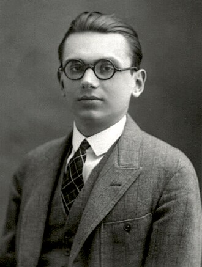
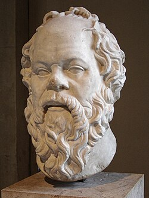
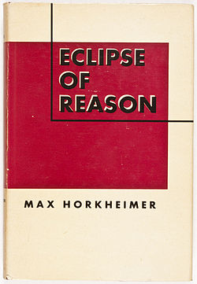

El teorema de la incompletitud de Gödel

Los teoremas de Gödel demostraron la imposibilidad de establecer una axiomatización de la matemática de forma consistente y completa
En este blog se encontrarán múltiples entradas sobre programación y filosofía

Los teoremas de Gödel demostraron la imposibilidad de establecer una axiomatización de la matemática de forma consistente y completa

Sócrates, al reconocer la ignoraciancia acerca del mundo que le rodea, es uno de los mayores representates de la admiración del mundo como experiencia clave en el desarrollo filosófico

La escuela de Frankfurt (especialmente Horkheimer) crítica la razón instrumental moderna al olvidar los objetivos a los que tiende el desarrollo de la técnica